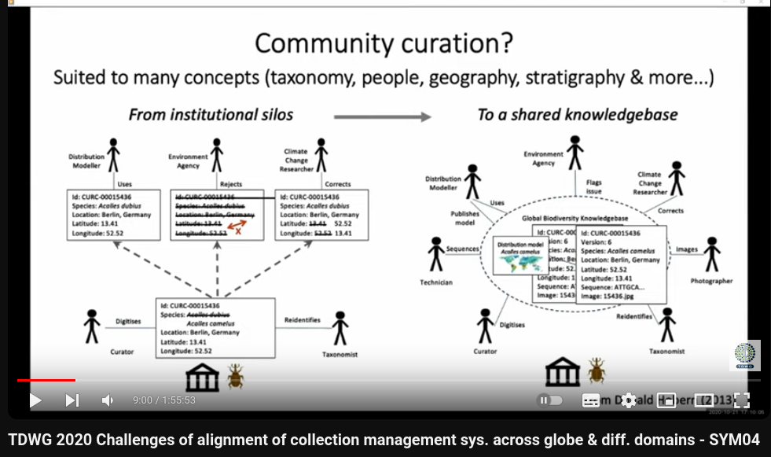
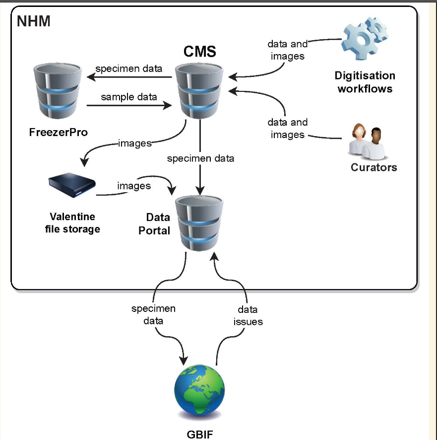
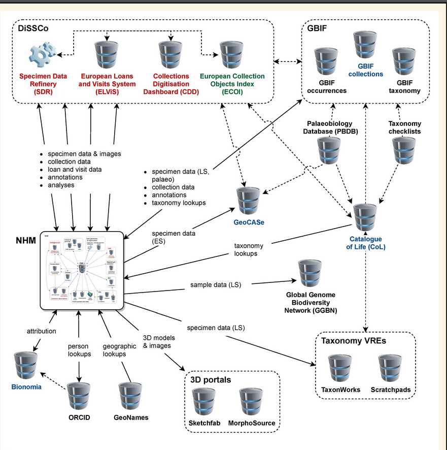
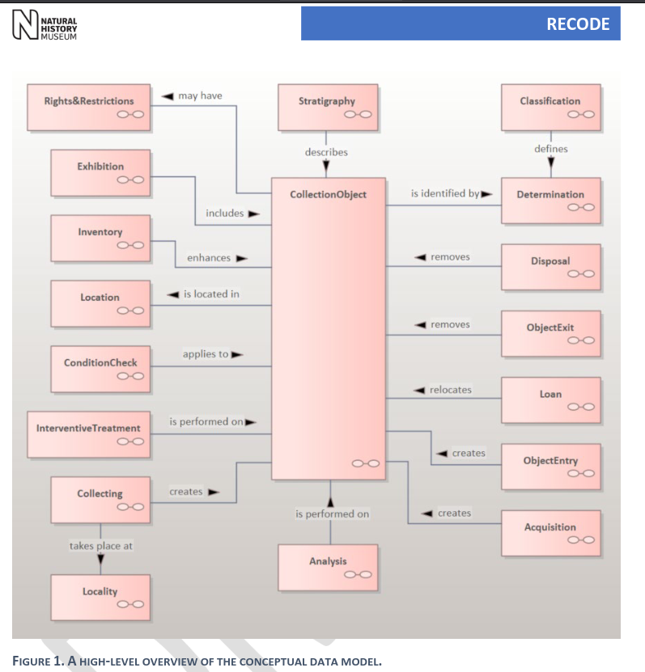
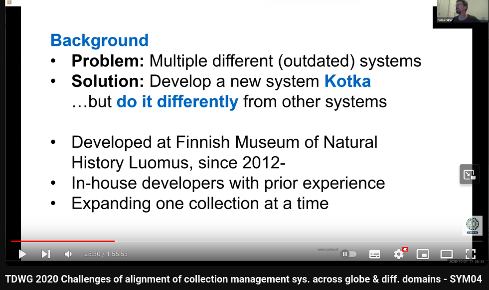
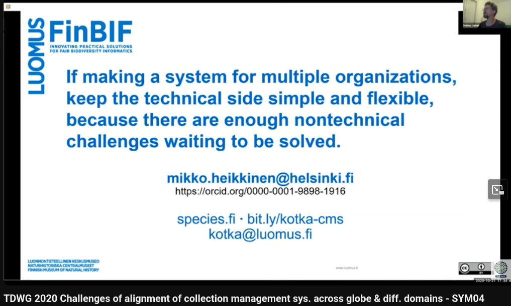

Collection Management Systems (TDWG 2020 Symposium)
隨筆紀錄一下TDWG 2020關於自然史典藏系統的討論(線上)，已經是4年前的討論了，有的似乎也沒有在維護了，仍有參考價值。
RECODE
Vince Smith
英國自然史提出的解決方案，完整的data model，滿強調Linked Data，很有啟發性。
- RECODE: Towards a next-gen collections management system as part of the institutional and community data ecosystem
- OSF | RECODE community workshop slides 2020-12-08.pptx
- VPS_91297_Collier.pdf - Google 雲端硬碟 poster
多人協作? 
NHM data workflow 
NHM與世界的連結 
RECODE Data Model的關鍵: CollectionObject 
Kotka
芬蘭的自然史典藏系統，強調Simple and Flexible，不用關聯式資料庫，很像新創邊移動邊開槍的模式。
Mikko Heikkinen
Collection Management System | Suomen Lajitietokeskus
- focus on 80/20-rule, flexibility and simplicity
- not focus on comprehensive data model (denormalized data)
沒有好用的系統、又有開發的人，所以就可以自幹 
跨組織要使用，要讓系統簡單而保持彈性。因為非技術的問題就夠麻煩的了。 
Symbiota
去中心化系統很厲害，但感覺要花很多精力處理系統之間的同步，不知道是不是美國這種人多地大物博的才運作的起來?
Edward Gilbert
- decentralized data network (isolated decentralized network of mini-aggregators)
- live-managed Vs. snapshot
Specify
新版(Specify 7)轉移到網頁，很大的破壞式更新。
- Community-Driven decision making
DINA
不知道是不是沒繼續了，感覺沒有很活躍?
DIgital Information system for NAtural history data)
- web-based modules, throuth API, components can be modified or replaced by other components
Meeting In-Between: Moving beyond the buzz, bottlenecks, and bubble to collaboratively develop digitization tooling
很讚的總結，但我暫時無法吸收了。
Matt Yoder
- Digital Specimens in TaxonWorks
| Name | start | mantance | status | tech stack | stats |
|---|---|---|---|---|---|
| RECODE | 2022 | NHM | good model concept | ||
| Kotka | 2012 | Finnish Museum of Natural History Luomus | PHP, Zend | 2020: 2.5 million specimens,12 institutions | |
| Symbiota | 2008 | Arizona State University | PHP | 2020:50-60 public portals | |
| Specify | Specify Collections Consortium | ||||
| DINA | 2014 | RBGE? | not available (2024) | web |